mtPaint má mnoho základních nástrojù pro manipulaci s obrázkem, které jsou u¾iteèné v mnoha situacích. Tyto funkce lze nalézt v menu Obrázek a Efekty.
Pro oøíznutí obrázku staèí udìlat obdélníkovou výseè oblasti obrázku, kterou chcete zachovat a stisknout klávesu Delete.
Pro rychlou zmìnu mìøítka obrázku jednodu¹e stisknete klávesu 'Page Up' a zadáte nové rozmìry jaké po¾adujete. Pokud mìníte mìøítko RGB obrázku, máte na výbìr nìkolik metod. Pro vìt¹inu situací bude nejlep¹í pou¾ít výchozí metodu, ale jsou zde k dispozici dal¹í metody, pokud potøebujete nìco speciálního, jako lehké zaostøení obrázku, které se pou¾ívá pøi vytváøení miniatur obrázku.
Pokud mìníte mìøítko RGB obrázku, tak máte mo¾nost pou¾ít volbu gamma korekce pro úpravu obrázku. Lidské oko je více citlivé na rozdíly mezi tmavými odstíny, ne¾ na rozdíly mezi svìtlými. Tato nelinearita je zanesená v RGB kódování, tak¾e mno¾ství svìtla vyzáøené body na stínítku obrazovky nezávisí na RGB hodnotách lineárnì, ale je dáno mno¾stvím energie. Obyèejnì se o toto nemusíte starat, ale pøi práci s grafikou, kde je mnoho pixelù mícháno dohromady, vede prosté míchání jejich RGB hodnot k tomu, ¾e je obrázek tmav¹í, ne¾ by mìl být a men¹í svìtlé detaily se ztratí. Pro vyøe¹ení tohoto problému je vhodné pou¾ít gamma korekci.
Aktuální úrovnì jasu zále¾í na nastavení displeje, jako je jas, nebo kontrast a citlivost lidí na rùzné odstíny svìtla se také velice li¹í - nìkteøí lidé vidí barvy levým okem jinak, ne¾ jak je vidí pravým. Aby k tìmto probémùm nedocházelo, tak profesionální práce grafika vy¾aduje kalibraci monitoru a formáty obrázku obsahující data barevného profilu; ale pixelová kresba barevné profily neøe¹í a je prohlí¾ena neprofesionály na nezkalibrovaných displejích - tak¾e pro práci s nimi je nejlep¹í pracovat s prùmìrem. Pøedpis z ITU-R doporuèení 709, které je pou¾ito v mtPaintu, pracuje dobøe ve vìt¹inì pøípadù. Gamma korekce je provedena pøevedením ka¾dé RGB komponenty ka¾dého pixelu na jeho odpovídající jasovou úroveò pou¾itím vý¹e zmínìného pøedpisu, smícháním tìchto úrovní dohromady jak daná operace zpracování vy¾aduje a pøevedením výsledku zpìt na RGB.
Gamma korekce je nabídnuta jako mo¾nost místo toho, aby byla pou¾ita v¾dy, proto¾e u¾ivatel mù¾e ji mù¾e chtít vypnout kvùli lep¹ímu zachování malých tmavých detailù na jasném pozadí, které by se jinak ztratily v oslnìní. Také, proto¾e mnoho jiných programù, jako GIMP nemají gamma korekci a u¾ivatel mù¾e vy¾adovat identické výsledky s tìmito programy.
Gamma korekci mù¾ete trvale zapnout nastavením pøepínaèe v oknì voleb. Zde je obrázek, který byl zmen¹en s a bez gamma korekce:
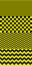
Gamma korekce tohoto typu je také pou¾itá v jiných funkcích, jako je volná rotace, efekt zaostøovací masky a efekt ¹kály ¹edi.
Je mo¾né otáèet obrázek rychle po 90 stupních, nebo dle jakéhokoliv úhlu. Napøíklad mù¾ete mít fotku, která není úplnì rovná a v tomto pøípadì mù¾ete zkusit následující postup:


Pokud chcete zvìt¹it, nebo zmen¹it ¹íøku, èi vý¹ku obrázku, mù¾ete to provést stisknutím klávesy 'Page Down'.
Pokud chcete upravit barvu obrázku, mù¾ete to provést stiskem klávesy 'Insert'. Zde také najdete funkci redukce bitù barev umo¾òující sní¾ení poètu barev v obrázku.
Menu Efekty vám umo¾ní aplikovat rùzné efekty na aktuální obrázek. Typ efektù, které jsou k dispozici závisí na tom, jestli upravujete obrázek s indexovanou paletou, nebo RGB obrázek.
Zde je ukázka efektu Baktérie, co provede na patøiènì pøipraveném obrázku:
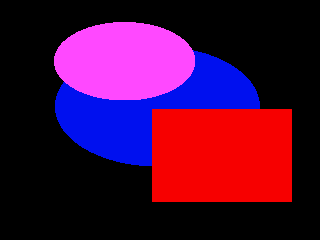
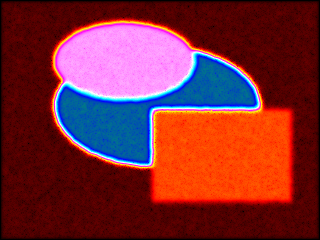
 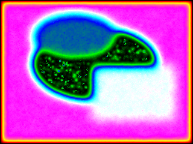
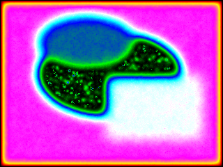
mtPaint má dvì metody pro vytvoøení obrázku se ¹kálou ¹edi. Je zde jednoduchá metoda pøevodu a také verze s gamma korekcí, jak je popsána v sekci 6.2.1. Zde je vizuální porovnání:
 |
Originální obrázek |
| Ve ¹kále ¹edi | |
 |
Ve ¹kále ¹edi (s Gamma korekcí) |
Zaostøovací maska je speciální typ metody zaostøení, který se více hodí pro fotografy, ne¾ standardní zaostøovací efekty, kvùli vìt¹ím mo¾nostem jeho nastavení.
Hodnota Polomìr øídí, kolik pixelù se zùèastní zaostøovacího procesu. Jestli¾e má fotografie více jemných detailù, tak bude vhodná ni¾¹í hodnota. Kdy¾ se polomìr nastaví na moc velkou hodnotu, tak se okolo hran objeví kruhy.
Hodnota mno¾ství øídí, jak moc se obrázek zaostøí. Èím vy¹¹í hodnota, tím bude výsledný obrázek ostøej¹í.
Prahová hodnota nastaví minimální rozdíl mezi pixely pøed aplikováním zaostøení. Tuto hodnotu lze pou¾ít jako ochranu oblastí s jemnými pøechody pøed po¹kozením zaostøovacím procesem, tøeba modrá obloha.
Zde je vizuální pøíklad Gaussova rozmazání s rùzným nastavením hodnot X/Y:
 |
Originální obrázek |
 |
X = 10, Y = 0 |
| 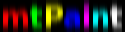 | X = 0, Y = 10 |
Funkce v menu Efekty vám umo¾ní transformovat plochý obrázek na izometrický. Napøíklad zde je pùvodní obrázek následován dal¹ím s efektem 'Levá strana dolù':


Tento obrázek je vytvoøen s pomocí pùvodního obrázku a dále aplikací funkcí 'Dolní strana vpravo' a následnì 'Levá strana dolù':

Z technických, nebo umìleckých dùvodù mù¾e být vhodné pøevést RGB obrázek na obrázek s indexovanou paletou. mtPaint má mnoho nástrojù, jak toho docílit s pou¾itím polo¾ky 'Pøevést na indexovaný'. Proces se skládá ze dvou èástí: Nejdøíve je dané èíslo v paletì nastaveno; Následnì jsou pixely nakresleny s pou¾itím této palety, aby se co nejvíce blí¾ily originálnímu RGB obrázku. Proto¾e je tento proces aproximací, není øe¹ení úplnì perfektní a výsledek se mù¾e znaènì li¹it v závislosti na nastavení, které kreslíø pøedepí¹e.
První rozhodnutí, které musíte udìlat je kolik budete chtít mít v paletì barev (mezi 2 a 256). Èím více barev zvolíte, tím se bude výsledný obrázek více podobat originálnímu RGB obrázku. Pokud u¾ nemáte paletu pøipravenou, tak mù¾ete pou¾ít kvantizér pro vytvoøení pøibli¾né palety. Ka¾dý z kvantizérù v mtPaintu má rùzné výhody a nevýhody, tak¾e nejlep¹í bude experimentálnì zjistit, který pracuje nejlépe na daný obrázek.
Jakmile máte paletu pøipravenou, tak mohou být pixely spoèítány na nové plátno s indexovanou paletou. Nejjednodu¹¹í metoda je vybrat nejbli¾¹í barvu v paletì ke ka¾dému pixelu, co¾ je volba '®ádný' v sekci 'Rozechvìt'. Ostatní metody pou¾ívají techniky rozechvìní ¹íøení pixelù pro dosa¾ení pro oko hezèího výsledku.
Re¾imy 'Rozechvìlý' a 'Rozptýlený' jsou jako speciální efekty a jejich výsledky jsou trochu stylizované a mohou trochu zmìnit podobu originálu. Pro praktické pou¾ití je vhodný 'Floyd-Steinberg (rychlý)', který podává dobré výsledky pro rozsáhlej¹í palety jako tyto vytvoøené Kvantizací na 64 barev a více.
'Floyd-Steinberg' a 'Stucki' jsou více pokroèilé re¾imy, které rozhazují pixely dle parametrù provedeného pod tlaèítkem 'Nastavení'. Stucki vzory mají tendenci být hrubé, s více pixely mimo barvu. Zde je popis, co dìlá ka¾dá z ostatních voleb:
Barevný prostor definuje, jak jsou barvy porovnávány. Jsou zde tøi, kde ka¾dý zdùrazòuje rozdílné aspekty fyzických barev - pøírodnì, na úèet ostatních aspektù. Z tohoto dùvodu mù¾e být ka¾dá z nich nejlep¹í volbou v nìkterých pøípadech a nejhor¹í v jiných.
sRGB je mìøení svìtla vyzáøeného barevným pixelem. Stejnì jako dithering manimuluje také se svìtlem, barvy nejblí¾e v sRGB produkují co nejmen¹í rozdíly - co¾ vede k jemnìj¹ím výsledkùm s velice malou paletou. Ale pro ménì vhodné palety se to stane nevýhodou, proto¾e lidské oko vidí rozdíly mezi svìtlými barvami mnohem ménì ostøe, ne¾ mezi tmavými, tak¾e barvy nejbli¾¹í v sRGB nemusí vypadat nebli¾¹í pro u¾ivatele.
RGB je barevný prostor, který pou¾ívá ka¾dý, i kdy¾ mnoho lidí neví co to je a jak ho správnì pou¾ívat. Narozdíl od sRGB mají RGB hodnoty nelineární vztah ke svìtlu vyzáøenému pixely - a zatímco nejsou pøesným mìøením jasu, jak ho vnímá èlovìk, tak jsou k nìmu nejblí¾, víc ne¾ sRGB hodnoty. Z tohoto dùvodu produkují porovnání v RGB vìt¹í aktuální rozdíly, ne¾ pøi pou¾ití sRGB - ale výsledky mohou stále vypadat lépe.
LXN je barevný prostor, který se sna¾í poskytnout mìøení, jak èlovìk aktuálnì vnímá rozdíly barev. Ale jeho úspìch v tomto je omezen, co¾ by mìlo být oèekáváno - nemù¾e existovat ¾ádné správné mìøení, proto¾e vnímání barev není vùbec konstantní; rùzní lidé vidí vìci rozdílnì, stejná vìc v rozdílných podmínkách je vidìna rozdílnì, atd. Ale kdy¾ RGB vybere 'nejbli¾¹í' barvu, se kterou bude souhlasit jen slepec, tak nás zachrání LXN; Je daleko ménì náchylný k nalezení zelené jako nejbli¾¹í k èervené, nebo k udìlání podobného nesmyslu. Ale znovu, s LXN budou aktuální rozdíly rozházeny mnohem více, ne¾ v pøípadì RGB, tak¾e výsledné vzorkování bude mnohem citelnìj¹í.
Rozdíl mìøení definuje, co lze pova¾ovat za rozdíl mezi dvìma barvami ve vybraném barevném prostoru. Vìt¹inou to lze nechat napokoji s výchozí tradièní Euclidean vzdáleností; ale nìkdy se to hodí jako poslední mo¾nost, tak¾e je v¾dy nadìje. 'Nejvìt¹í' pou¾ívá jako vzdálenost nejvìt¹í rozdíl v souøadnicích mezi tøemi souøadnicemi a 'Suma' pou¾ívá absolutní hodnoty v¹ech tìchto tøí rozdílù seètených dohromady.
Redukce plýtvání barvami se sna¾í zastavit rozdíly propagace, ne¾ se stanou ¹kodlivými a vytvoøí viditelné artefakty, místo vylep¹ení toho, jak obrázek vypadá. Výchozí volba 'Gamut' interferuje nejménì; udr¾í ka¾dou barvu-plus-rozdíl v limitech palety, tak¾e rozdíl nemù¾e rùst nekoneènì - to udr¾í rozdíly zaznamenatelné v jednom pixelu, zabránìní takovým vìcem, jako mimobarevné okraje okolo jednobarevných oblastí. Volba 'Slabì' navíc udr¾í rozdíl sám o sobì na takové hodnotì, aby nebyl víc jak polovina maximálního jasu; a 'Silnì' ji udr¾í je¹tì víc, na jedné ètvrtinì maxima. To lze pou¾ít pro pøedcházení mimobarevých pixelù, kde by zpùsobily více ¹kody, ne¾ u¾itku, ale já preferuji vyladit místo toho chybu propagace.
Serpentinový scan ynamená, ¾e ka¾dá druhá øádka je zpracovávána v opaèném smìru. Obvykle je to nejlep¹í volba, proto¾e rozdíly jsou distribuovány støídavì z leva do prava a z prava do leva, bez shroma¾ïování na pravé stranì a bez vytváøení viditelných artefaktù. Ale jsou zde pøípady, kde vykreslení nashromá¾dìných rozdílù nìkde na pravé stranì je lep¹í, ne¾ pøehození zpìt do leva - potom mù¾e být serpentinový scan vypnutý.
Chyba propagace øídí, jaké procento rozdílu vyvstane z ka¾dého pixelu, který byl pøedistribuován. Obyèejnì jsou to v¹echny - 100%; ale pro ne úplnì dobøe palety, její¾ èasté zmìny nemù¾ou ovlivnit dost blízkých pixelù a místo toho nepou¾itelnì akumulují, dokud nezpùsobí nìkterý vzdálený pixel barvu mimo místo. Zabránit tomuto chování lze tím, ¾e omezíme úroveò propagace. Nejèastìj¹í rada je nastavit ji na 75%, ale já jsem vyzkou¹el, ¾e 85% podává prakticky stejné výsledky; obrázky jsou mnohem èist¹í, a¾ na ty celkovì tmav¹í. Ty obvykle vypadají lépe, kdy¾ se pou¾ije algoritmus Stucki.
Ale omezením chyby propagace není v¾dy nejlep¹í volba; ideální øe¹ení by mìlo být pouze utlumení nepou¾itelných a ¹kodlivých pøípadù, kde zachování tìchto rozdílù zlep¹í vyzuální kvalitu. Selektivní chyba propagace se tomu blí¾í, co nejvíc, jak je to mo¾né v akceptovatelném èase a omezení místa.
Selektivní chyba propagace vy¾aduje zpracování rozdílu barev ne vzdálenìj¹ích, ne¾ sousední pixely; jestli¾e to v nich není vlo¾eno, mìly by být zahozeny. Ale problém je ten, ¾e vstupní rozdíl a originální barva pixelu jsou seèteny dohromady a potom je barva pixelu vybrána s ohledem na tuto vlastnost, tak¾e jak rozhodnout která èást zbývajícího rozdílu nále¾í pixelu samotnému a má být propagován dál a která èást je ze vstupního rozdílu a má být vyhozena? Ètyøi podivnì vypadající re¾imy, které vydíte jsou ètyøi rùzné cesty k rozumnému vyøe¹ení tohoto nevyøe¹itelného problému.
V ka¾dém pøípadì je rozdíl rozdìlen na èást vstupního rozdílu do jednoho lokálního (pozdìji rozdíl, který má zbýt, bude mít vstupní rozdíl nulu). Ale v re¾imech 'Separovat' jsou slo¾ky èervená, zelená a modrá vá¾eny oddìlenì a rozdìlení tomu odpovídá - a v re¾imech 'Délka' jsou jako váhy pou¾ité rozdílové vektory stejné pro v¹echny tøi komponenty.
Druhá polovina jmen re¾imù se vztahuje ke zpracování vstupního rozdílu, který nemá ¾ádný vliv na pøijaté barvy pixelù; v re¾imech 'Souètových' jsou rozdíly stále vá¾eny a rozdìleny, jako nahoøe a 'Rozdílové' re¾imy jednodu¹e kompletnì zahodí vstupní rozdíly a zpropagují ten lokální.
I kdy¾ jsou výsledné ètyøi re¾imy jen lehce rozdílné, jsou zde stále pøípady, kde jeden z nich pracuje lépe, nebo hùøe ne¾ druhý; ale který z nich je nejlep¹í na daný obrázek lze rozpoznat pouze jejím vyzkou¹ením.
Pokud je selektivní propagace zapnutá, øídí posuvník chyby propagace, kolik procent vstupního rozdílu bude zachováno, i kdy¾ má být zahozen; ve výchozím stavu je to 0. ale mù¾e být nastaven na 75%, nebo 85% pro více rozli¹itelnou variantu redukované celkové chybové propagace.
Selektivní propagace je nejèastìji potøebná v obrázcích s velkým rozli¹ením konvertovaných do ne-moc-padnoucí palety. Pro malý obrázek konvertovaný z jedné palety do druhé, øeknìme, ¾e èervená oblast bude lehce tmav¹í, ale stále jemná je jednoznaènì lep¹í, ne¾ stejná oblast popepøená bílými pixely; a selektivní propagace zabrání tìmto ne¹»astným pøípadùm, ale stále nám umo¾ní pøekonvertovat øeknìme rù¾ovou oblast na ¹achovnicový vzorek èervených a bílých pixelù.
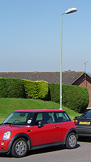
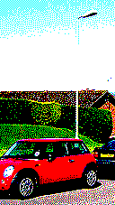
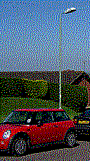
 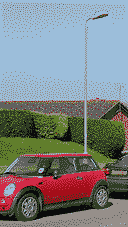
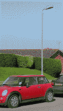
A - Originál.
B - 8 barev, s pou¾itím aktuální palety, Floyd-Steinberg (rychlý).
C - 8 barev, s pou¾itím aktuální palety, Floyd-Steinberg.
D - 8 barev, s pou¾itím aktuální palety, Floyd-Steinberg, RGB barevný prostor, separovat/rozdìlit na 50% chyby propagace.
E - 8 barev, DL3 Kvantování, Floyd-Steinberg.
Nìkdy Kvantizéry produkují plo¹¹í a ménì barevné výsledky, které jsou ne¾ádoucí. Tomu lze nìkdy zabránit zvý¹ením saturace obrázku s pou¾itím okna 'Transformace Barev' pøed konvertováním originálního obrázku.
Pokud provádíte redukci poètu barev RGB obrázku jen na pár, øeknìme 16, tak mù¾e Kvantizér zahodit nìkolik dùle¾itých barev, které chcete mít v indexovaném obrázku. Mù¾ete manuálnì zabránit tomuto problému tímto postupem:
nastavení rozechvìní pro Floyd-Steinberg a Stucki vy¾aduje experimentování s ka¾dým obrázkem pro dosa¾ení nejlep¹ího výsledku, ale já pou¾ívám následující nastavení pro jejich dobré výsledky s mnoha rùznými typy fotografií: